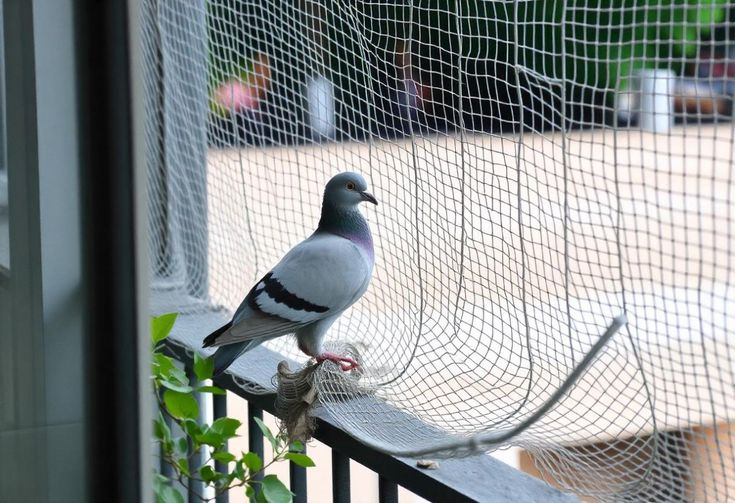
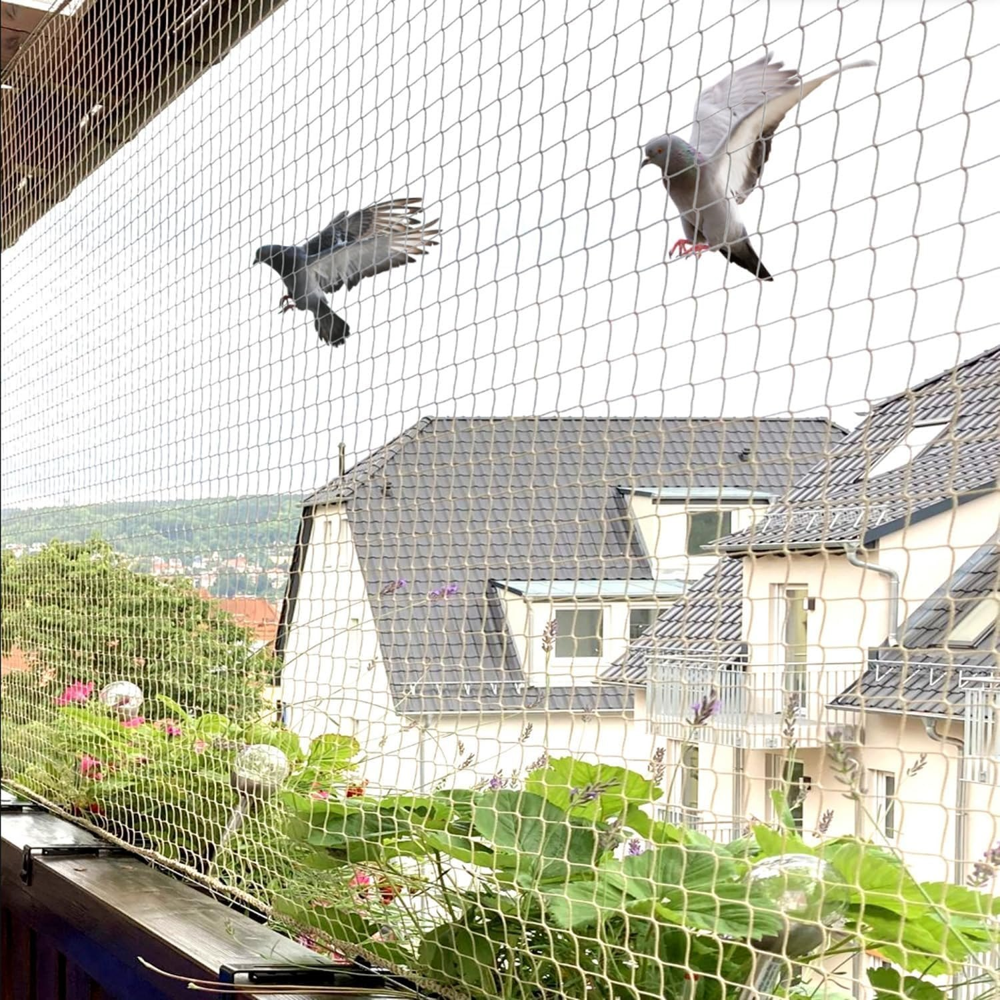

Looking for pigeon safety nets in Jayanagar Bengaluru? We provide high-quality pigeon net installation for balconies, windows, and open spaces to prevent bird entry.

SSDJ Safety Nets offers pigeon safety nets in Jayanagar Bengaluru to protect your balconies, terraces, and windows from bird intrusion. Our anti-pigeon net installation helps prevent nesting, droppings, and property damage while maintaining hygiene and cleanliness in your home.
Modern buildings require safety solutions that do not interfere with design or comfort. Our professionally installed nets provide reliable protection while maintaining open views and natural ventilation. They are carefully fitted to remain subtle and blend with the structure, helping prevent birds and external disturbances. Made from strong, weather-resistant materials, they ensure durable performance and low maintenance for residential and commercial spaces.
SSDJ Safety Nets provides high-quality pigeon safety nets near me in Jayanagar Bengaluru for apartments, homes, and commercial buildings. Our anti-bird nets help keep your space clean, safe, and hygienic.
If you are searching for pigeon nets near Jayanagar or bird protection nets near me, our solutions are perfect for stopping pigeons from entering balconies, windows, and duct areas.
Our pigeon safety nets are made with strong and weather-resistant materials. Customers looking for durable pigeon nets near me or long lasting bird nets near Jayanagar can trust our quality without blocking airflow or light.
These nets help prevent bird droppings, nesting, and damage to your property. Many people search for balcony pigeon nets near me or window bird nets near Jayanagar to maintain hygiene and cleanliness.
We provide professional pigeon safety nets installation near Jayanagar with secure fixing and neat finishing. Our team offers quick service for flats, villas, offices, and commercial buildings.
SSDJ Safety Nets is trusted by customers searching for best pigeon nets near me and affordable pigeon nets near Jayanagar. Our nets are low maintenance and give long-term protection.
Choose SSDJ Safety Nets if you are looking for anti bird nets near me, pigeon control nets near Jayanagar, or safety nets services near me.
Our pigeon safety nets in Bangalore effectively block pigeons from entering balconies, windows, and terraces, keeping your space completely bird-free.
Prevent pigeon droppings, feathers, and nesting with our anti-pigeon net installation, ensuring a clean and healthy living space.
We use high-quality, UV-resistant nylon for long-lasting pigeon safety nets that withstand all weather conditions.
Our expert team provides safe and neat pigeon net installation in Jayanagar Bengaluru for apartments, homes, and commercial buildings.
Book a free site inspection for pigeon safety nets in Jayanagar Bengaluru. Our experts will visit your home and suggest the best pigeon net installation for balconies, windows, and terraces.
